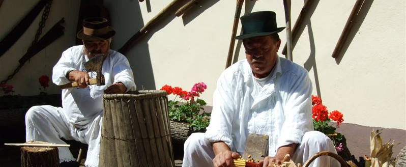
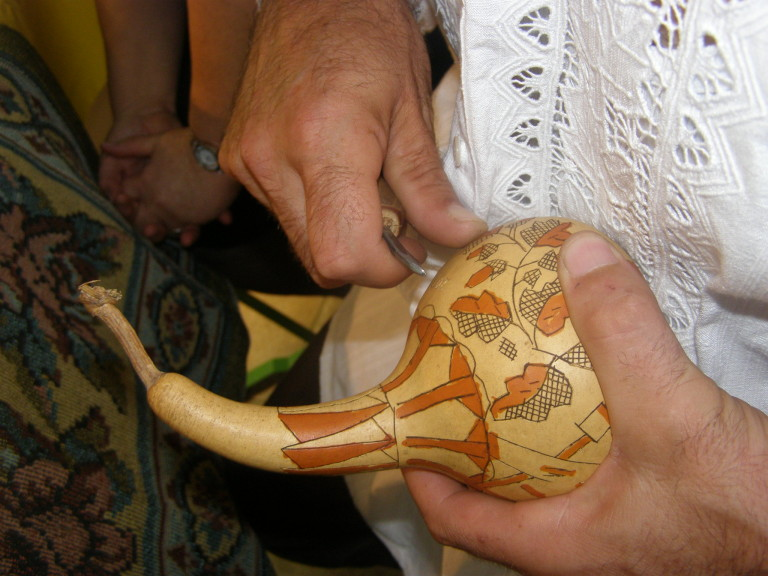
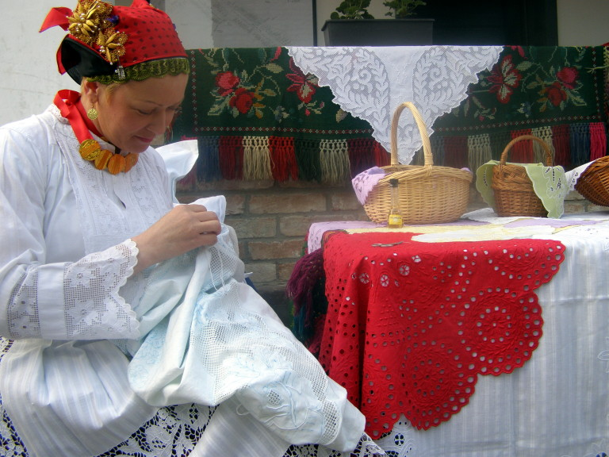
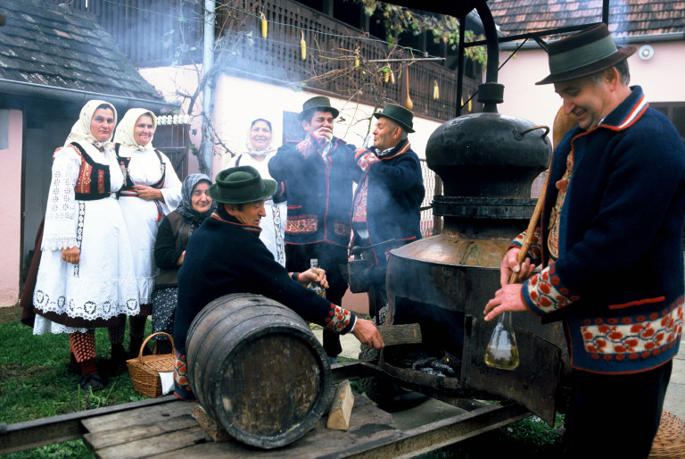
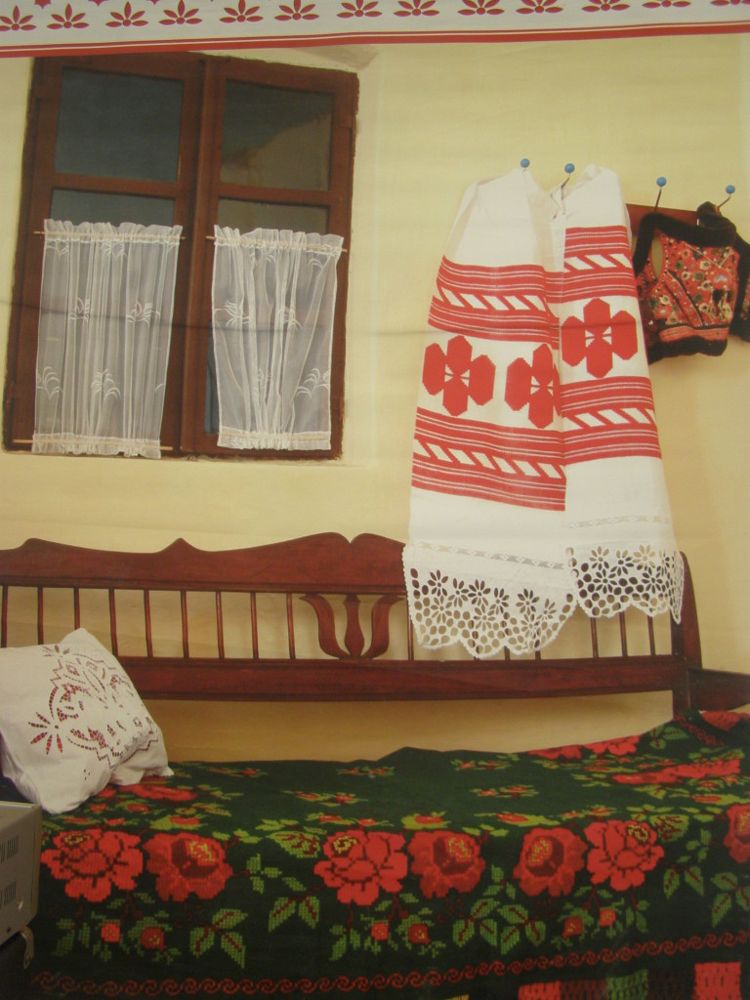

Pečenje rakije – Nekada davno u županjskoj okolici nije bilo kuće ili zadruge koja nije imala voćnjak-šljivik pored kuće ili negdje na stanu pod šumom. Stoga je pečenje rakije običaj duboko ukorijenjen u tradiciju ovoga kraja. U godinama kad je urodilo voće rakija se pekla dan i noć. Tako bi početkom jeseni cijeli kraj mirisao na prepečeni kom i svježu rakiju. Rakija je pratila sve događaje, od rođenja do smrti, te bila i ostala narodni lijek.
U prošlosti je na području Slavonije izrada tekstila bila vrlo razvijena a tradicijsko ruho se uglavnom proizvodilo u vlastitoj sredini. Žene su se unutar obiteljskih zadruga brinule o uzgoju, proizvodnji i preradi tekstilnih sirovina, o njihovom predenju, bojanju, o tkanju platnenih, suknenih pa i svilenih tkanina i konačno o šivanju i ukrašavanju odjeće za sve ukućane. Rukotvorine i razni oblici ručnog rada bili su dio djevojačkog miraza, a danas se više koriste kao ukrasi koji imaju upotrebnu vrijednost u svakodnevnom životu, u obitelji ali i poslovnim prostorima. Nastavljajući tradiciju naših baka i danas nam je cilj popularizirati kulturnu baštinu ovog dijela Slavonije i približiti dio tradicijskih elemenata životu suvremenog čovjeka.
Šaranje tikvica – Šarane tikvice predstavljaju ne samo majstorstvo i vještinu, već i specifičnu granu narodne umjetnosti. Svojom tradicijom, šaranje tikvica u Slavoniji seže u vrijeme postojanja starih obiteljskih zajednica – zadruga. Šarani su svi oblici tikvica različitih veličina. Šarane tikvice imale su nekada široku upotrebnu vrijednost, te su rabljene u kućanstvima kao posude za različite svečane prigode i potrebe kao solenice, čaše, tanjurići, posude za izvlačenje rakije iz bureta, kosci su u polje sa sobom nosili tikvicu o pojasu, za nošenje vode, veće tikvice su se koristile kao pomoć za neplivače, kao plovci za držanje ribarskih mreža … Iako su danas izgubile svoju prvotnu primjenu, šarane su tikvice ostale kao prepoznatljiv i omiljen slavonski tradicijski suvenir izuzetne vrijednosti.



